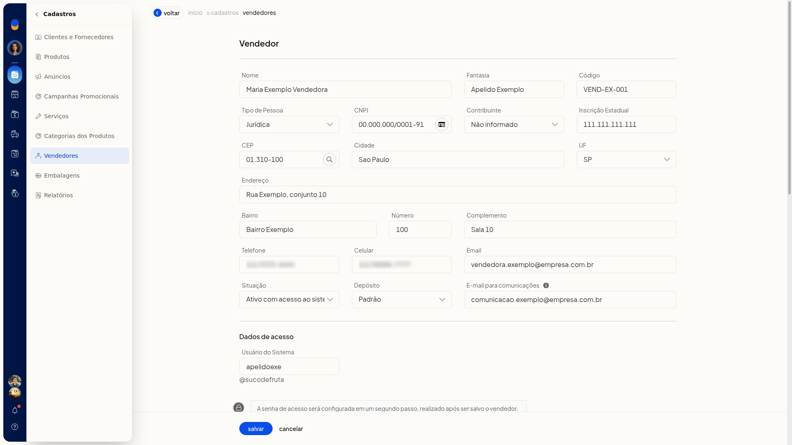
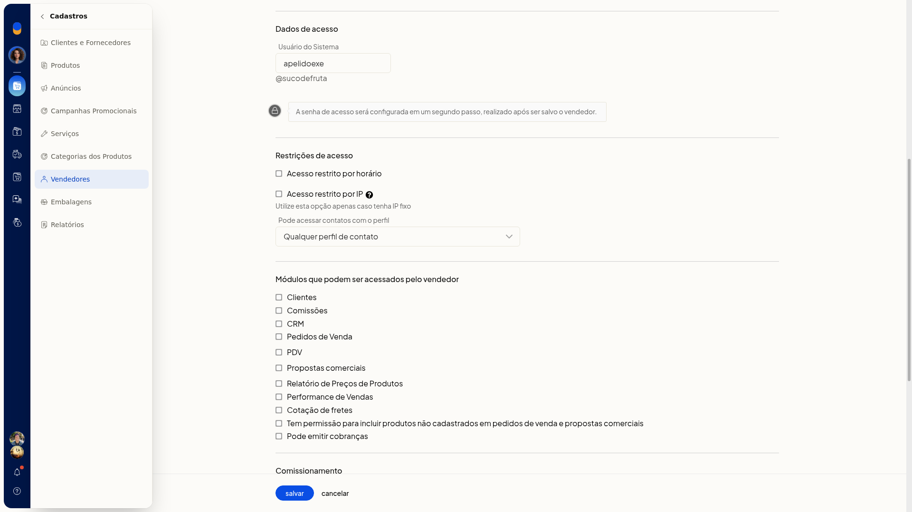
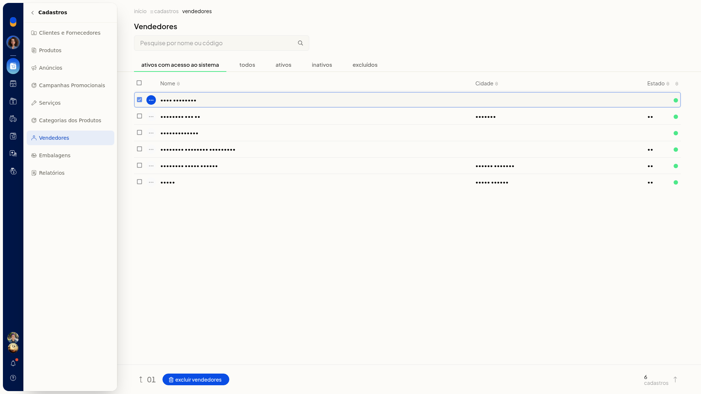

Vendedores
No ERP da Olist, os vendedores ficam em uma lista própria. Você consulta o cadastro, inclui a identificação, o endereço, o acesso ao sistema e as permissões, e define o comissionamento por alíquota fixa ou por faixas de desconto.
A lista fica em Cadastros > Vendedores.
Importante
- Nenhum campo do formulário vem marcado como obrigatório.
- Use Acesso restrito por IP apenas com IP fixo.
- Nesta tela não há ação para importar vendedores por planilha.
Instruções
Incluir um vendedor
-
Acesse Cadastros > Vendedores.
-
Clique em incluir vendedor.

-
Preencha a identificação.
Identificação
- Nome
- Fantasia
- Código
- Tipo de Pessoa: Jurídica, Física, Estrangeiro ou Estrangeiro no Brasil. O padrão é Jurídica.
- CNPJ: informe o documento conforme o tipo de pessoa.
- Contribuinte: Não informado, Contribuinte ICMS, Contribuinte isento de Inscrição no cadastro de Contribuintes do ICMS ou Não Contribuinte, que pode ou não possuir Inscrição Estadual no Cadastro de Contribuintes do ICMS. O padrão é Não informado.
- Inscrição Estadual

- Preencha o endereço e o contato.
Endereço e contato
- CEP
- Cidade
- UF: Selecione ou uma UF de AC a TO, incluindo EX
- Endereço
- Bairro
- Número
- Complemento
- Telefone
- Celular
- Escolha a Situação. As opções são Ativo com acesso ao sistema, Ativo, Inativo, Sem Movimento e Excluído. O padrão é Ativo com acesso ao sistema.
- Se o campo Depósito aparecer, escolha um depósito já cadastrado na empresa. A opção inicial é Padrão. O campo só aparece quando a empresa usa depósitos.
- Preencha o acesso ao sistema.
Acesso ao sistema
- E-mail para comunicações
- Usuário do Sistema: ajuste o valor sugerido, se precisar.
- Acesso restrito por horário
- Acesso restrito por IP: use apenas com IP fixo.
- Pode acessar contatos com o perfil: Cliente, Fornecedor, Vendedor, Transportador, Funcionário ou Outro.

-
Marque as permissões que o vendedor pode usar:
- Clientes
- Comissões
- CRM
- Pedidos de Venda
- PDV
- Propostas comerciais
- Relatório de Preços de Produtos
- Performance de Vendas
- Cotação de fretes
- Tem permissão para incluir produtos não cadastrados em pedidos de venda e propostas comerciais
- Pode emitir cobranças
-
Defina o comissionamento e, se quiser, as Observações.
Comissionamento
- Regras para liberação de comissões: Liberação parcial vinculada ao pagamento das parcelas (padrão), Liberação integral no faturamento, Liberação integral após o pagamento da primeira parcela ou Liberação de 50% no faturamento e o restante vinculado ao pagamento das parcelas.
- Comissionamento: Comissão com alíquota fixa (padrão) ou Comissão com alíquota conforme descontos.
- Na alíquota fixa, informe Alíquota de comissão.
- Desconsiderar comissionamento por linhas de produto para este vendedor só aparece se a empresa usa linhas de produto.

- Para comissão por faixas, selecione Comissão com alíquota conforme descontos. Informe Desconto de até (%) e Comissão (%). Clique em Adicionar desconto para incluir outra faixa.

- Clique em salvar para gravar o vendedor. A senha de acesso é a etapa seguinte ao salvamento. Para voltar à lista sem incluir o vendedor, clique em cancelar.
Consultar vendedores e usar as ações da lista
-
Acesse Cadastros > Vendedores. A lista mostra as colunas Nome, Cidade e Estado, os indicadores de situação, a quantidade de cadastros e Voltar ao topo.

-
Pesquise em Pesquise por nome ou código.
-
Use as abas ativos com acesso ao sistema, todos, ativos, inativos e excluídos. A primeira vem selecionada.
-
Na linha do vendedor, abra o menu de contexto e escolha Gerenciar comissões, Excluir vendedor ou Alterar senha de acesso.

-
Marque um vendedor para ver a contagem da seleção e usar Excluir vendedores. Sem marcação, Ações não abre menu.
